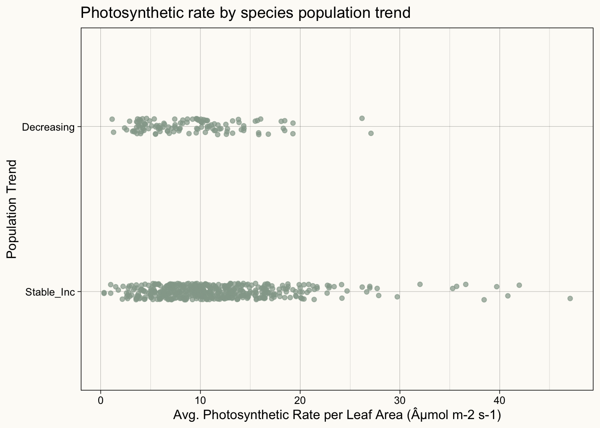
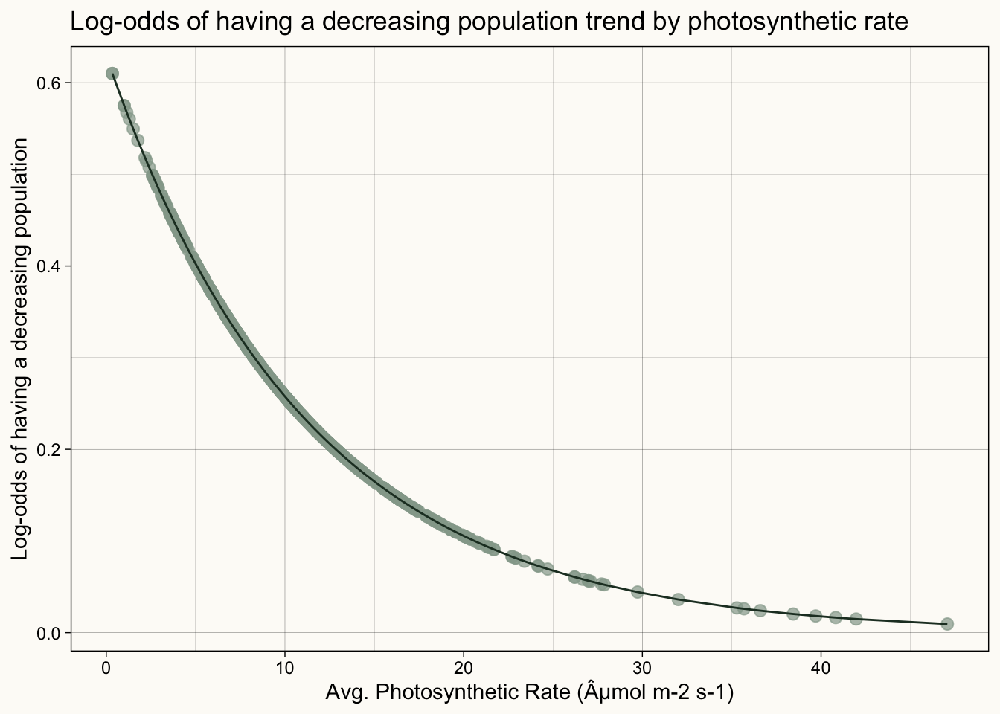

Climate change and human activity are significant contributors to habitat loss, and therefore threaten many plant populations. Nearly 40% of plant species are threatened worldwide, and even more are predicted to become threatened as effects of climate change and human activity continue (IUCN 2023). Many plant species that are threatened or endangered are not very resilient to conditions outside of their niche, often due to their physiological traits, such as carbon fixation or drought tolerance (Bhadra et al. 2022).
C4 and CAM plants have a more efficient carbon fixation process and are generally more photosynthetically-efficient than C3 processes (Nobel 1991). Plants with high photosynthetic efficiency are often economically important as crops and more resilient to harsh environments due to their energy conservation (Simkin, López-Calcagno, and Raines 2019).
Understanding the drivers of plant population decline by specie can help inform on conservation priority, though it is good to keep in mind that not all plants with a decreasing population trend are classified as threatened. Some may have a decreasing population due to effective management of invasive and destructive species (Byun, Blois, and Brisson 2017).
Question
There are many other factors that affect a species’ population trend, but in this project, I am wondering how does a plant species’ photosynthetic rate and ecological threats influence its odds of having a decreasing population? Additionally, can I use this model to find the log-odds of a species with an unknown status having a decreasing population trend?
Data & Methods
Photosynthetic rate data was obtained from the BIEN R package (Maitner 2023). The Botanical Information and Ecology Network (BIEN) was developed by collaborating ecologists at the National Center for Ecological Analysis and Synthesis (NCEAS). The BIEN database contains a variety of information ranging from phylogeny data to species distribution. To determine population trend and if a species is threatened by climate change or human activity I obtained data from the International Union for Conservation Nature (IUCN) Red List. Climate threats include habitat shifts, droughts, temperature extremes, storms & flooding, and “other impacts” that are not defined by the IUCN. Human threats include housing & urban areas, commercial & industrial areas, tourism & recreation areas, recreational activities, war & civil unrest, and work & other activities (Gearty and Chamberlain 2022).
To analyze my data I ran a logistic regression model. I used Increasing/Stable (0) and Decreasing (1) as the categorical binary response variable on average photosynthetic rate per leaf area, climate threatened (yes/no), and human threatened (yes/no).
Data Preparation
Data was prepared in a separate data_fetch.R script. Data from BIEN was cleaned and joined with data from the IUCN Red List entries for species in the kingdom Plantae. Species that had an increasing or stable population trend were assigned a binary variable of 0 and those who had a decreasing population trend were assigned a binary variable of 1.
source(file.path("data_fetch.R"))
Data Exploration
Before starting any statistical analysis, we should take a look at the data.
Code
ggplot(join, aes(x = avg_photo)) +geom_histogram(fill ="#94a699", color ="black") +theme_linedraw() +labs(x ="Avg. Photosynthetic Rate per Leaf Area (µmol m-2 s-1)",title ="Distribution of photosynthetic rate") +theme(plot.background =element_rect(color ="#FDFBF7",fill ="#FDFBF7"),panel.background =element_rect(fill ="#FDFBF7"))
Code
ggplot(data = join, aes(x = avg_photo, y = pop_trend)) +geom_jitter(width =0, height =0.05, alpha =0.7, color ="#94a699") +theme_linedraw() +scale_y_discrete(limits =c("Stable_Inc", "Decreasing")) +labs(x ="Avg. Photosynthetic Rate per Leaf Area (µmol m-2 s-1)", y ="Population Trend", title ="Photosynthetic rate by species population trend") +theme(plot.background =element_rect(color ="#FDFBF7",fill ="#FDFBF7"),panel.background =element_rect(fill ="#FDFBF7"))

Code
clim_plot <-ggplot(clim_human_res, aes(x = climate_threatened)) +geom_bar(width =0.5, fill ="#94a699", color ="black") +theme_linedraw() +labs(x ="Climate threatened?") +theme(plot.background =element_rect(color ="#FDFBF7",fill ="#FDFBF7"),panel.background =element_rect(fill ="#FDFBF7"))human_plot <-ggplot(clim_human_res, aes(x = human_threatened)) +geom_bar(width =0.5, fill ="#94a699", color ="black") +theme_linedraw() +labs(x ="Human threatened?", y ="") +theme(plot.background =element_rect(color ="#FDFBF7",fill ="#FDFBF7"),panel.background =element_rect(fill ="#FDFBF7"))clim_plot + human_plot +plot_annotation(theme =theme(plot.background =element_rect(color ="#FDFBF7",fill ="#FDFBF7")),title ="Counts for climate threatened and human threated species")
Analysis
Logistic Regression
To begin, I want to run a logistic regression on just photosynthetic rate and population trend before incorporating any other variables.
The model estimates that one additional unit in photosynthetic rate is associated with a change in the odds ratio of \(e^{-0.089} = 0.915\), or a 8.9% decrease in the odds of having a decreasing population.
Code
# compute odds hat varphoto_fitted <- mod_photo %>%augment(type.predict ="response") %>%mutate(y_hat = .fitted) %>%mutate(odds_hat = y_hat / (1- y_hat)) # y_hat is p# plotggplot(photo_fitted, aes(x = avg_photo, y = odds_hat)) +geom_point(size =2.5, color ="#94a699", alpha =0.7) +geom_line(color ="#223a2b") +scale_y_continuous() +labs(x ="Avg. Photosynthetic Rate (µmol m-2 s-1)",y ="Log-odds of having a decreasing population",title ="Log-odds of having a decreasing population trend by photosynthetic rate") +theme_linedraw() +theme(plot.background =element_rect(color ="#FDFBF7",fill ="#FDFBF7"),panel.background =element_rect(fill ="#FDFBF7"))

Additionally, we can visually see this relationship between the odds ratio and photosynthetic rate. As photosynthetic rate increases, the log-odds of having a decreasing population decreases.
Full Logistic Model
This first logistic model only considered photosynthetic rate, but now we want to add in if the species is threatened by climate change or human activity, since both of these historically have contributed to plant species becoming threatened.
Logisitc Regression Model Results for Photosynthetic Rate, Climate Threatened, and Human Threatened
log Threat Pobability
Predictors
Log-Odds
CI
p-value
Intercept
-0.460 *
-0.922 – 0.004
0.051
Average Photosyntheitc Rate (µmol m-2 s-1)
-0.110 ***
-0.158 – -0.065
<0.001
Climate Threatened
1.458 ***
0.665 – 2.237
<0.001
Human Threatened
0.926
-0.299 – 2.210
0.145
Observations
609
* p<0.1 ** p<0.05 *** p<0.01
From this model we can conclude that plants threatened by climate factors have their odds of having a decreasing population increase by a factor of 4.29, while those threatened by human factors have their odds increase by a factor of 2.52.
We can also see that photosynthetic rate does still have an effect on population trend. Based on this model, the odds of having a decreasing population trend fall by about 11% for each unit increase in photosynthetic rate.
Assessing Model Performance
Now that we have this model, I am interested in assessing the accuracy of it, which can be done by creating a confusion matrix. This is a very simple version of a confusion matrix where I have set log-odds values of ≥0.5 to classify the species as 1 (has a decreasing population) and values <0.5 to 0 (has a non-decreasing population). I can then compare these predicted values to the actual population trend for the species and calculate the false-positive and false-negative rates.
Confusion Matrix to Assess Photosynthetic Rate Model Performance
Predicted Non-Decreasing Pop.
Predicted Decreasing Pop.
Actually has Non-Decreasing Pop.
477
8
Actually has Decreasing Pop.
112
12
From this confusion matrix we can see True Positive/True Negative values in green and False Positive/False Negative values in red. Based on these counts, the model has an 80% accuracy. The model seems to be better at predicting if a species has a non-decreasing population rather than if it has a decreasing population.
Above 90% accuracy seems to be standard for industry implementation (Towards Data Science 2020), but for the purpose of this project, I still want to use my model to try to make population trend predictions for other species not in my data.
Making Probabilistic Predictions
There are many species from the BIEN data that are not present on the IUCN Red List. Here, I am using my model to make out-of-sample predictions. To do this, I’ll need to pull out the model coefficients and create a function with inputs for the coefficients, photosynthetic rate, and if the plant is threatened by climate change.
Predicted log-odds of being threatened (ˆy) for species with an unknown population trend
Speices
Photosynthetic Rate
Climate
Human
ˆy
Psammochloa villosa
65.05000
0
0
0.0004961
Helianthus neglectus
48.72300
0
0
0.0029764
Helianthus niveus
46.74867
1
0
0.0156898
Glaux maritima
43.00000
1
1
0.0572868
Helianthus cusickii
42.24100
0
0
0.0060494
Gouania lupuloides
0.70820
1
0
0.7151743
Serjania mexicana
0.68560
0
1
0.5965838
Clematis florida
0.61000
1
0
0.7173674
Passiflora vitifolia
0.51340
1
1
0.8662658
Cissus erosa
0.43180
0
0
0.3758644
These are the log-odds predictions for the species with the 5 highest and 5 lowest photosynthetic rates.
Psammochloa villosaCissus erosa
Thoughts and Conclusions
Overall, this model suggests that photosynthetic rate per leaf area has a strong effect on if a plant will have a decreasing population trend. Those threatened by climate change and human factors are also more likely to have a decreasing population trend. The results of this logistic model and odds ratio generally align with what I expected to see. Though, I did think that human factors would have more of a significant impact There are also many other factors that this model is not including, but another big contribution to habitat loss is agriculture, which would be interesting to incorporate in the model.
This model may also be biased due to the relatively small sample size of plant species. There were many observations that were filtered out during data preparation since each species needed to be present in the BIEN and IUCN data sets. Given a larger sample, the model could be more accurate. Additionally, I would like to construct a more sophisticated confusion matrix using the caret package and split my data into training and testing sets.
With a more comprehensive data set and controlling for more variables (additional threats), this model could be useful in flagging species that have high odds of having a decreasing population trend, if they currently have an unknown status. As I mentioned in the motivation for this project, not all plants with a decreasing population trend are threatened, so it would also be interested to create a similar model using photosynthetic rate and conservation status.
To see the full code and data preparation, check out the Github repository.
References
Bhadra, Preetha, Sagar Maitra, Tanmoy Shankar, Akbar Hossain, Subhashisa Praharaj, and Tariq Aftab. 2022. “Climate Change Impact on Plants: Plant Responses and Adaptations.” In, 1–24. Elsevier. https://doi.org/10.1016/b978-0-323-85665-2.00004-2.
Byun, Chaeho, Sylvie de Blois, and Jacques Brisson. 2017. “Management of Invasive Plants Through Ecological Resistance.”Biological Invasions 20 (1): 13–27. https://doi.org/10.1007/s10530-017-1529-7.
Nobel, Park S. 1991. “Achievable Productivities of Certain CAM Plants: Basis for High Values Compared with C3 and C4 Plants.”New Phytologist 119 (2): 183–205. https://doi.org/10.1111/j.1469-8137.1991.tb01022.x.
Simkin, Andrew J, Patricia E López-Calcagno, and Christine A Raines. 2019. “Feeding the World: Improving Photosynthetic Efficiency for Sustainable Crop Production.”Journal of Experimental Botany 70 (4): 1119–40. https://doi.org/10.1093/jxb/ery445.
@online{muir2023,
author = {Muir, Sam},
title = {The Influence of Photosynthetic Rate and Ecological Threats
on Plant Species Population Trends},
date = {2023-12-15},
url = {https://shmuir.github.io/projects/2023-12-15-plant-population-prediction/},
langid = {en}
}